Przetwarzanie równoległe i strumieniowe [06-S2APD04]
Środa
Wykład 8.15 - 9.45 (lub zdalnie!)
Laboratoria 10.00 - 11.30
Przetwarzanie równoległe i strumieniowe
dr inż. Marcin Witkowski
Mail: mw@amu.edu.pl lub @Teams
Pokój : B3-37
Zaliczenie
Zaliczenie
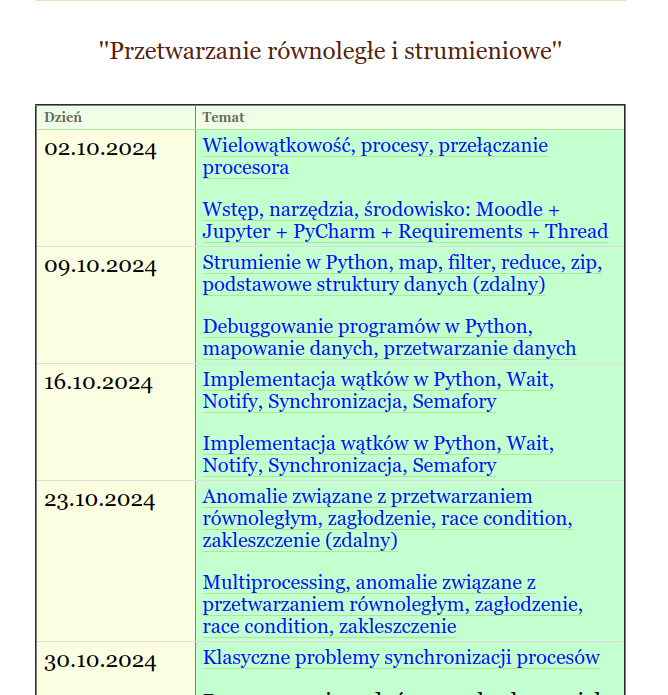
Procesory w naszych komputerach wykonują wiele programów: systemowych i użytkownika.
Wykonania (uruchomienia) programów nazywamy procesami.
Przetwarzanie równoległe
"Przetwarzanie równoległe" - dotyczy programów, w których wiele czynności może odbywać się równocześnie.
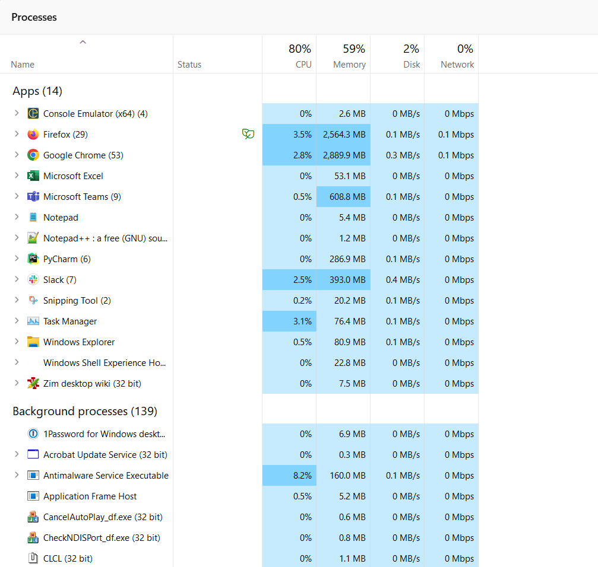
Procesory
Każdy program, aplikacja, działa na zasadzie instrukcji, które są wykonywane w tym samym czasie, podzielone na tzw. wątki.
Istnieje wątek główny, który np. w przypadku aplikacji odpowiada za interakcję z użytkownikiem oraz wątki poboczne.
Procesor o N rdzeniach potrafi obsługiwać 2*N wątków równolegle.
Procesory
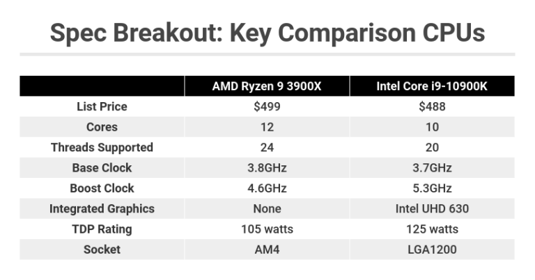
Źródło: https://www.pcmag.com/reviews/intel-core-i9-10900k
Proces vs Program
Program jest zbiorem instrukcji do wykonania.
Procesem jest cały kontekst niezbędny do wykonania programu (procesor, pamięć, dane).
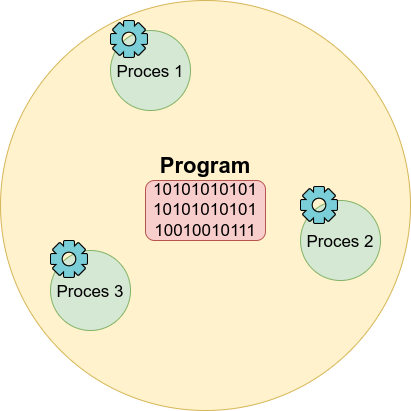
Proces
Proces (nazywany też czasem zadaniem) jest odseparowany od innych instancji procesów.
Proces a zasoby
Proces potrzebuje zasobów: czasu procesora, pamięci operacyjnej, plików, urządzeń wejścia, wyjścia itd.
Każdy proces ma własny obszar przydzielonej mu pamięci operacyjnej. Pamięć operacyjna zwykle jest podzielona na cztery części (nazywane segmentami):
Proces
W systemie może istnieć wiele procesów (wiele niezależnych przetwarzań), stąd ważne jest utrzymanie informacji o tym, które zasoby przedzielone na potrzeby każdego przetwarzania.
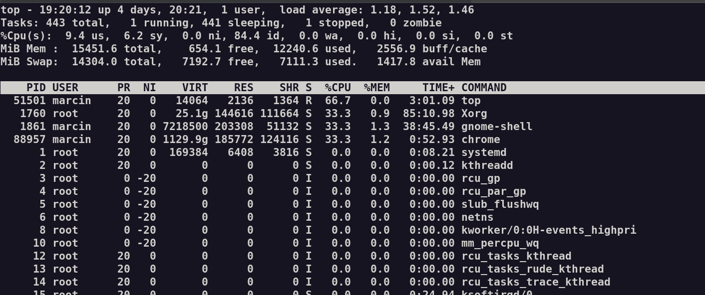
Przełączanie kontekstu
Przełączanie między procesami jest kosztowne.
Zmiana wykonywanego procesu (gdy procesor jest przydzielany innemu procesowi z jakiegokolwiek powodu) wiąże się ze złożonymi operacjami zapisania stanu obliczenia poprzedniego procesu i odtworzenia stanu obliczeń nowego procesu.
Planowanie procesów nie może więc zbyt często powodować zmiany wykonywanego procesu, ponieważ wówczas większość czasu pracy będzie poświęcona na ciągłe przełączanie kontekstu.
Source: Time Vectors by Vecteezy - https://www.vecteezy.com/free-vector/time
Programy w systemie
Odpowiednio częste przełączanie sprawia, że użytkownik ma wrażenie, że wyłącznie jego zadania są wykonywane przez system.
Użytkownik nie odczuwa zatem dyskomfortu, gdy zasoby systemu są w rzeczywistości współdzielone przez współbieżnie działające procesy wielu użytkowników.
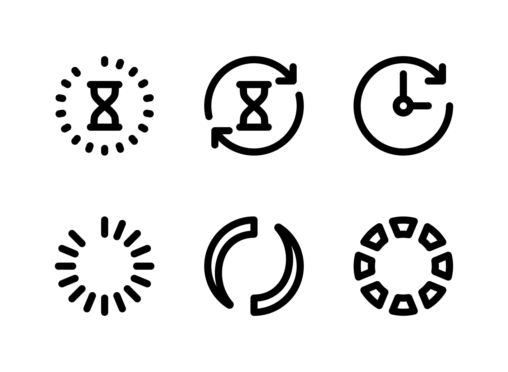
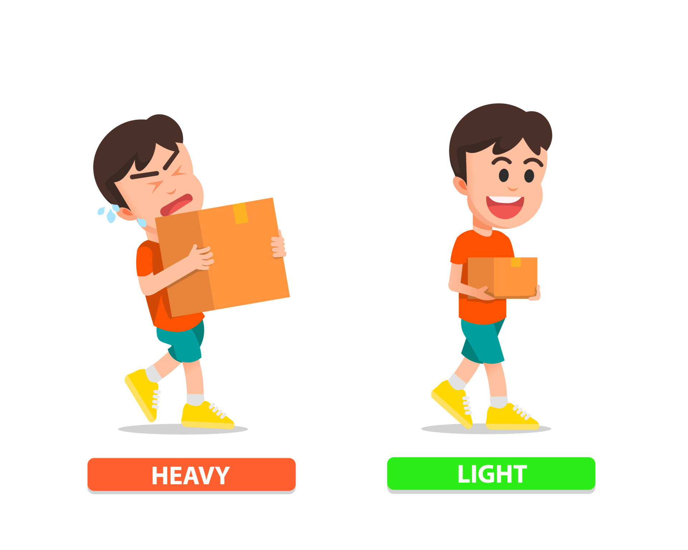
Wątki
Proces jest złożoną i kosztowną strukturą (ma swój segment kodu, stos, stertę i segment danych).
Z tego powodu zwykłe procesy nazywamy ciężkimi.
W ramach procesu można powołać do życia kilka lżejszych struktur nazywanych wątkami (ang.thread) albo procesami lekkimi.
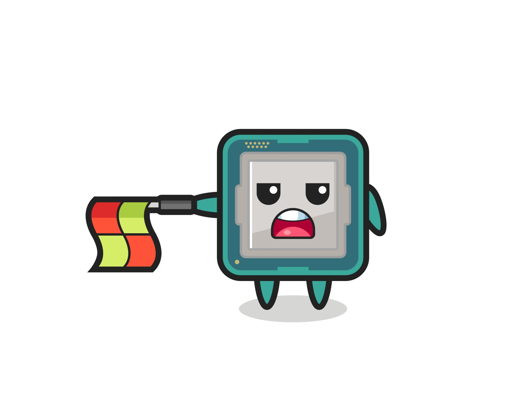
Wątki a zasoby
Wątki jednego procesu są wykonywane współbieżnie.
Każdy z nich ma oddzielne rejestry i stos wywołań, jednak współdzieli z innymi wątkami w ramach tego samego procesu segment danych, segment kodu, stertę, tablicę otwartych plików itp.
Można powiedzieć, że proces to grupa wykonujących go wątków (przynajmniej jednego).
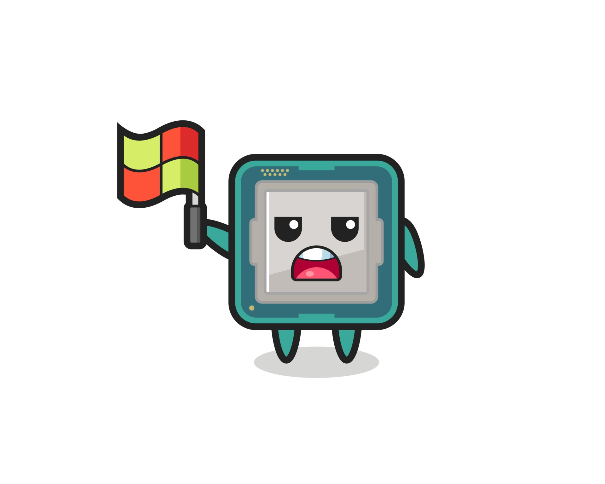
Cechy wątków
Zalety wątków
Korzyści ze stosowania wątków są rozmaite. Przede wszystkim wydajność: powołanie do życia wielu wątków jest znacznie tańsze niż stworzenie wielu ciężkich procesów.
Wątki mogą bez ograniczeń współdzielić przestrzeń danych procesu. Tak samo skomunikowane procesy (przez wspólny obszar pamięci), musiałyby korzystać ze złożonej usługi systemu operacyjnego, jaką jest pamięć dzielona.
Wątki współdzielą zasoby (procesor, pamięć, kod) w ramach jednego procesu.
Wątek zasoby
Każdy wątek (inna nazwa: proces lekki, ang. lightweight)
– Ma swój własny stan (Aktywny, Gotowy, Zablokowany)
– Ma swoje wartości rejestrów i licznika rozkazów.
– Ma swój własny stos (zmienne lokalne funkcji).
– Ma dostęp do przestrzeni adresowej, plików i innych zasobów procesu
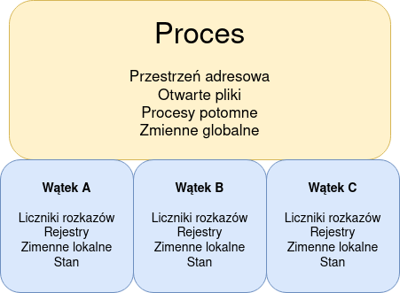
Proces vs Wątek podsumowanie
| ciężki lub wymaga dużej ilości zasobów | lekki, zużywa mniej zasobów niż proces |
| przełączanie wymaga interakcji z systemem operacyjnym | przełączanie nie wymaga interakcji z systemem operacyjnym |
| własna pamięć i zasoby | współdzielą pamięć, pliki |
| gdy jeden jest zablokowany nie możemy uruchomić nowego | gdy jeden jest zablokowany inny może zostać uruchomiony |
| każdy działa niezależnie od innych | może odczytywać, zapisywać i zmieniać dane innego wątku |
Proces
Wątek
Wielowątkowość
Kiedy wiele wątków jest wykonywanych w procesie w tym samym czasie, otrzymujemy termin „wielowątkowość".
W przeglądarce wiele kart może być różnymi wątkami. MS Word wykorzystuje wiele wątków: jeden wątek do formatowania tekstu, inny wątek do przetwarzania danych wejściowych.
Współbieżne vs równoległe
Przetwarzanie współbieżne (ang. concurrent computing) – przetwarzanie oparte na współistnieniu wielu wątków lub procesów, operujących na współdzielonych danych.
Wątki uruchomione na tym samym procesorze są przełączane w krótkich przedziałach czasu, co sprawia wrażenie, że wykonują się równolegle.
Współbieżne vs równoległe
W przypadku procesorów wielordzeniowych lub wielowątkowych, możliwe jest faktycznie współbieżne przetwarzanie.
W architekturach jednowątkowych w celu zapobieżenia zatrzymaniu przetwarzania wątków przez duże zadanie, stosuje się technikę wywłaszczania i multitaskingu.
Współbieżne vs równoległe
Przetwarzanie współbieżne to sytuacja, w której rozkazy jednego wątku wykonują się w momencie, gdy poprzedni wątek nie jest jeszcze zakończony (wątki się nakładają). Jeżeli przynajmniej dwa rozkazy wątków wykonywanych współbieżnie są realizowane w tym samym czasie, to wtedy mamy do czynienia z przetwarzaniem równoległym.
Przetwarzanie współbieżne jest pojęciem bardziej ogólnym w stosunku do przetwarzania równoległego. W związku z tym każde przetwarzanie równoległe jest przetwarzaniem współbieżnym, ale nie każde przetwarzanie współbieżne jest przetwarzaniem równoległym.
Program współbieżny
Program współbieżny jest poprawny jeśli posiada własności bezpieczeństwa i żywotności.
● Własność bezpieczeństwa - nigdy nie dojdzie do niepożądanej sytuacji (wejścia w niepożądany stan)
● Własność żywotności – jeżeli proces jest wstrzymany w oczekiwaniu na zdarzenie to zdarzenie to zajdzie w skończonym czasie
Wielowątkowość
Wielowątkowość to model wykonywania programu, który pozwala na tworzenie wielu wykonywanych niezależnie wątków.
Algorytmy nazywane równoległymi są trudniejsze w implementacji niż sekwencyjne, ponieważ współbieżność wprowadza dodatkowe możliwości popełnienia błędu.
Wielowątkowość - problemy
Przetwarzanie strumieniowe
Przetwarzanie strumieniowe to paradygmat przetwarzania danych w oparciu o równoległe przetwarzanie danych z wielu źródeł.
W przeszłości dane były zazwyczaj przetwarzane w partiach na podstawie harmonogramu lub określonego wcześniej progu (np. co noc o 1 w nocy, co sto wierszy lub za każdym razem, gdy wolumen osiąga dwa megabajty). Jest to tzw. przetwarzanie wsadowe.
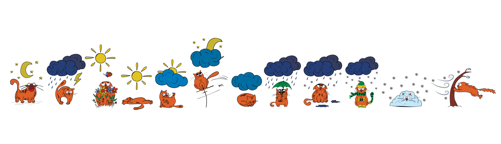
Przetwarzanie strumieniowe
Zamiast grupować dane i zbierać je w określonych odstępach czasu, aplikacje przetwarzania strumieniowego gromadzą i przetwarzają dane natychmiast po ich otrzymaniu.
Przetwarzanie strumieniowe umożliwia aplikacjom reagowanie na nowe zdarzenia w danych (np. przekroczenie zakresu alarmowego) w momencie ich wystąpienia.
Przetwarzanie strumieniowe
Działania, które przetwarzanie strumieniowe wykonuje na danych, obejmują
Przetwarzanie strumieniowe
Przetwarzanie strumieni jest najczęściej stosowane do danych generowanych jako seria zdarzeń, takich jak dane z sensorów, systemów przetwarzania płatności oraz logów aplikacji.
Z przetwarzaniem w tym modelu związane są pojęcia brokera danych takiego jak Apache Kafka® oraz biblioteki przetwarzającymi dane Apache Spark, Hadoop czy też Apache Flink.
Będą one tematem drugiej części przedmiotu.